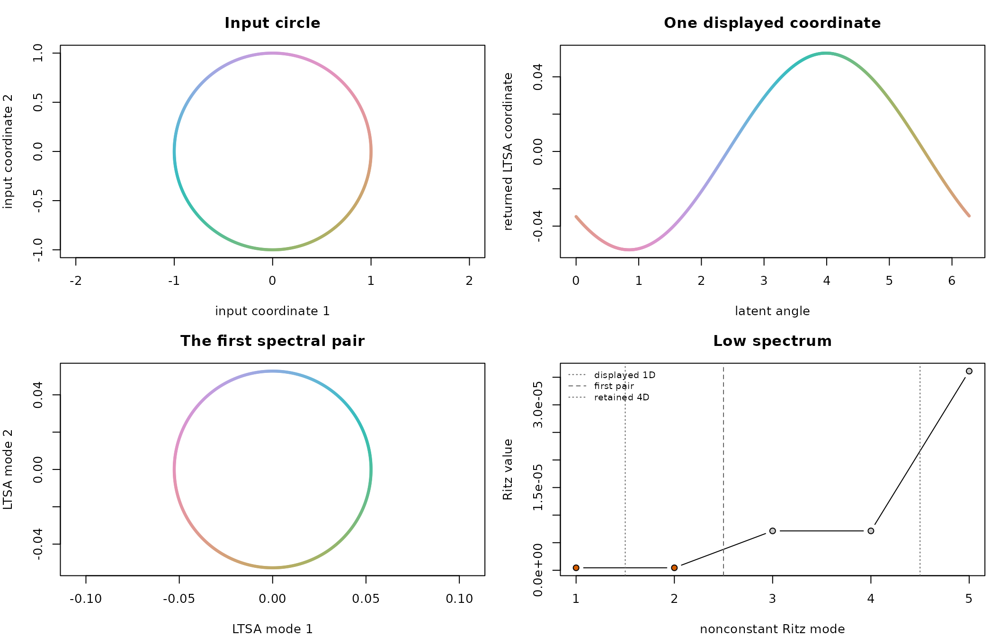
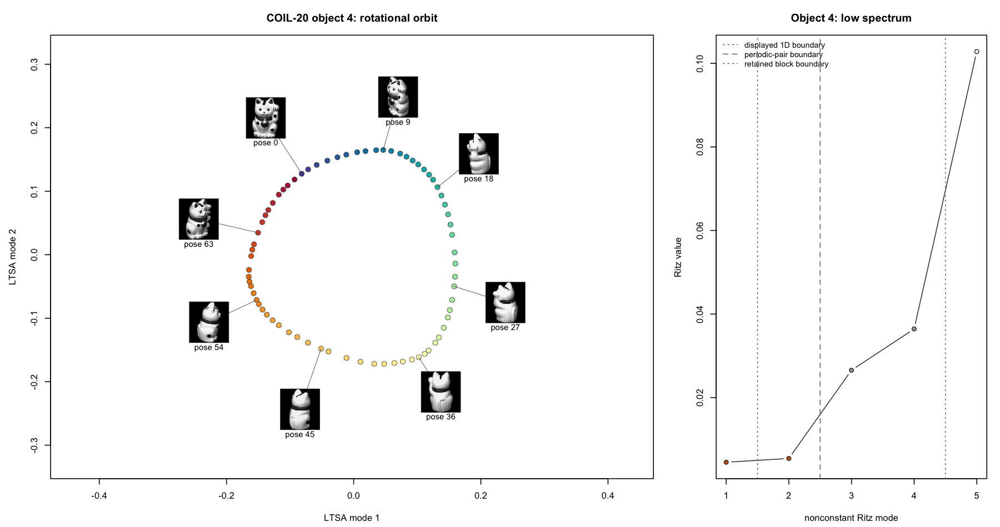
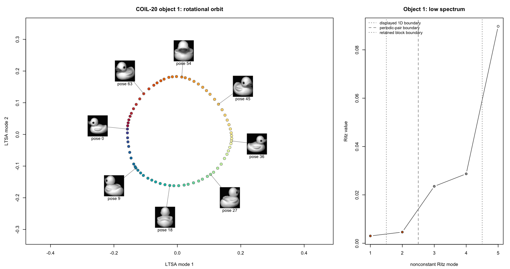
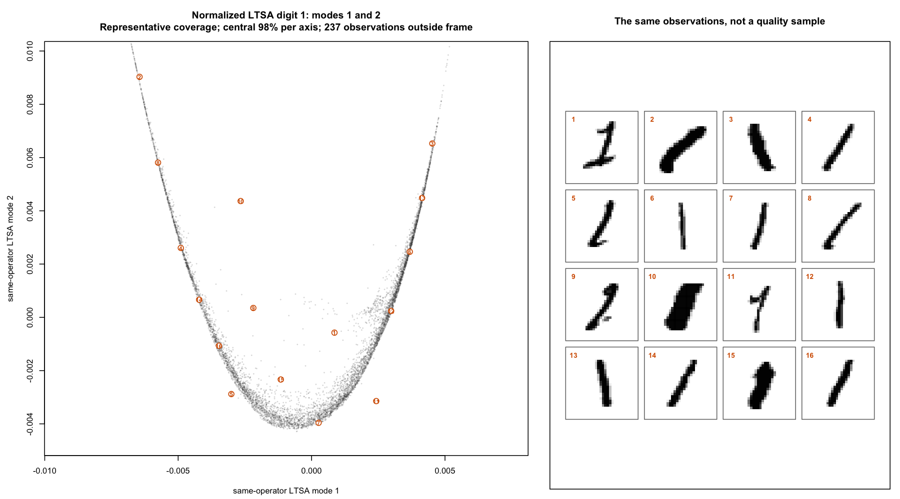
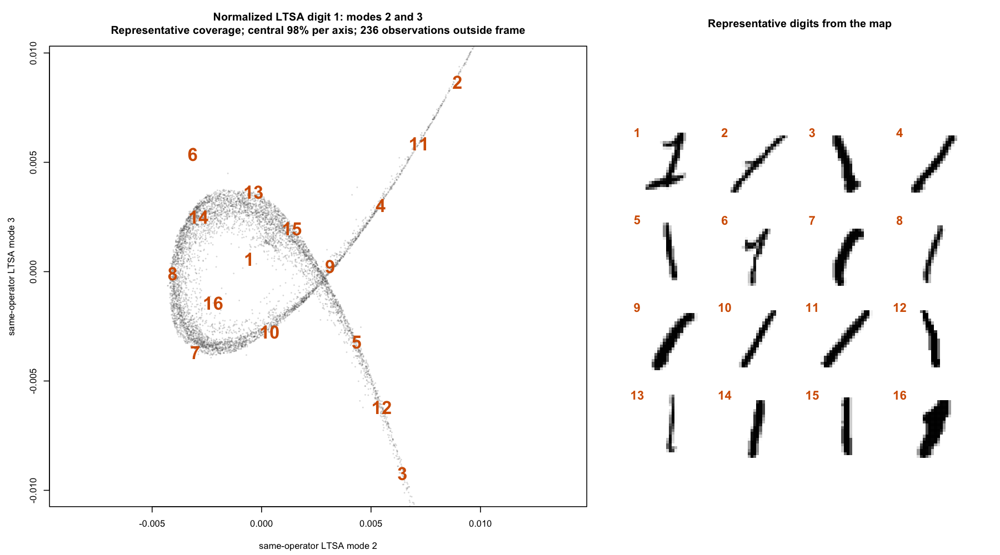
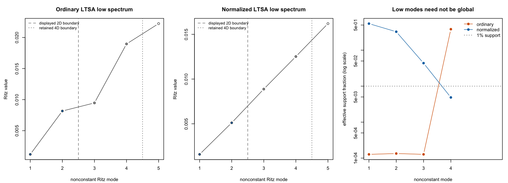
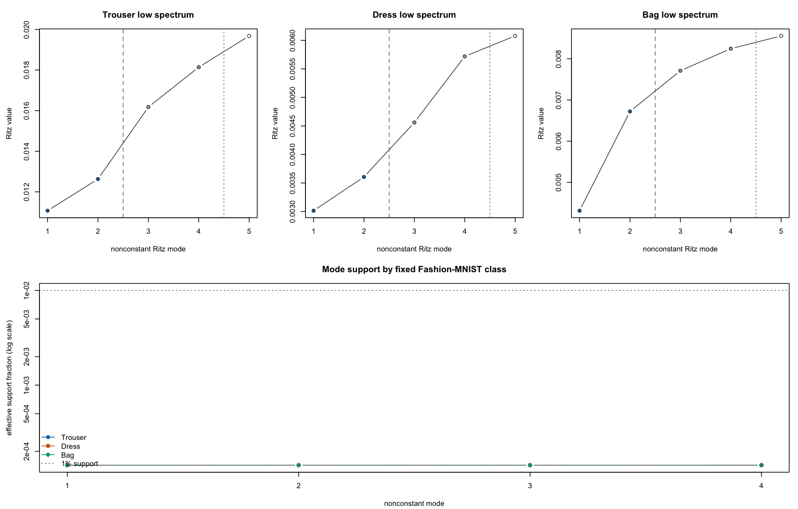
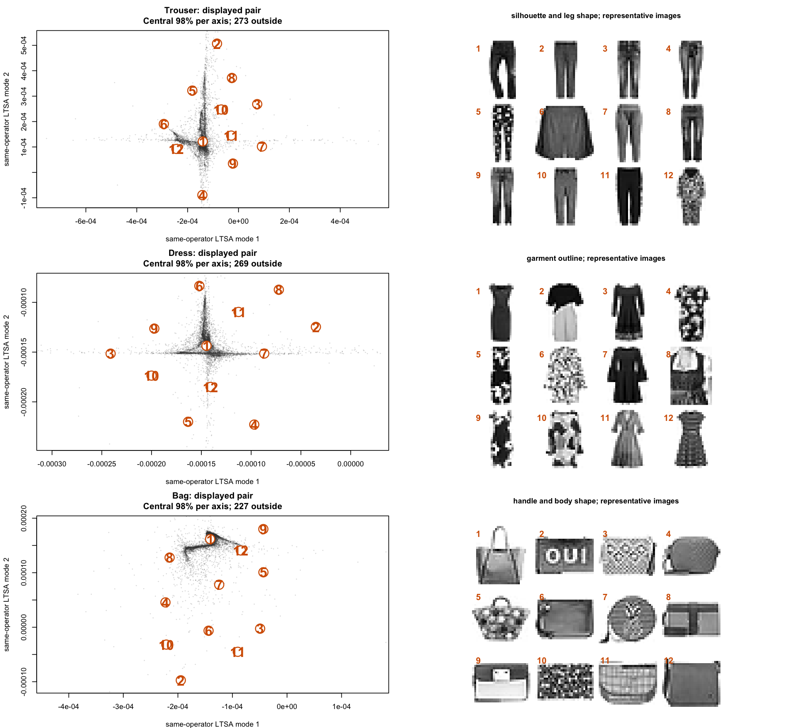

LTSA uses ndim twice: once to build the local tangent
spaces and again to choose how many global coordinates to return. Those
choices can differ. A circle is locally one-dimensional, for example,
but two coordinates show its closed path.
spectral_dim retains extra coordinates from the same
LTSA operator. This article shows how to inspect them on a circle,
COIL-20, MNIST, and Fashion-MNIST.
Keep more modes from the same operator
Given a data matrix X, request four low-frequency modes
while keeping a two-dimensional local tangent model and a two-coordinate
returned embedding:
fit <- ltsa(
X,
ndim = 2,
n_neighbors = 15,
output = "result",
spectral_dim = 4
)
dim(fit$embedding) # n by 2
dim(fit$spectral_embedding) # n by 4
identical(
fit$embedding,
fit$spectral_embedding[, 1:2, drop = FALSE]
)The calculation follows this pipeline:
data + graph + ndim
|
v
fixed operator B
|
v
eig_k candidate modes
|
v
spectral_dim retained modes
|
v
first ndim displayed| Control | Changes B? |
Purpose |
|---|---|---|
ndim |
yes | Sets the local tangent rank and displayed prefix |
spectral_dim |
no | Retains extra nonconstant modes from the fixed operator |
eig_k |
no | Gives the eigensolver a numerical candidate span |
Most users can leave eig_k at its default. When
retaining an expanded block, a manual request must be at least
spectral_dim + 2: one place for the known constant
direction and another for the mode just beyond the retained block.
The displayed and retained boundaries have separate diagnostics:
fit$eigen$diagnostics$scaled_boundary_gap
fit$eigen$spectral$diagnostics$scaled_boundary_gap
fit$eigen$status
fit$eigen$spectral$statusA boundary gap compares the last included mode with the next one. A large gap isolates the chosen subspace. A small gap suggests interpreting the neighboring modes together and checking their geometry and support.
A short inspection routine
Three questions organize the diagnostics:
- Is the operator structurally sound? Check graph connectivity and local ranks.
- Was the spectrum computed reliably? Check status, messages, and residuals.
- Is the displayed view well determined and useful? Check boundary gaps, inspect a small retained block, and measure how broadly each mode is supported.
When comparing stochastic fits, reuse the same saved neighbor matrix, reset the eigensolver seed immediately before each fit, and keep thread settings equal.
A circle needs a spectral pair
A circle has a one-dimensional tangent at every point. A single real-valued coordinate cannot follow the whole loop continuously, so the first two low-frequency modes work as a pair. Their signs and orientation can change between fits; treat the two-dimensional span as the stable unit.
The example uses exact neighbors and dense eigenanalysis, making the repeated pairs easy to see.
theta <- seq(0, 2 * pi, length.out = 721)[-721]
circle <- cbind(x = cos(theta), y = sin(theta))
circle_fit <- ltsa(
circle,
ndim = 1,
n_neighbors = 9,
nn_method = "exact",
eig_method = "eig",
eig_k = 8,
output = "result",
spectral_dim = 4
)
circle_fit$eigen$values
#> [1] 4.464673e-07
circle_fit$eigen$spectral$values
#> [1] 4.464673e-07 4.464673e-07 7.139639e-06 7.139639e-06
circle_fit$eigen$status
#> [1] "warning"
circle_fit$eigen$messages
#> [1] "Weak Ritz boundary gap after the selected block: 6.808e-18 < 1e-04."
The input circle, its one-dimensional LTSA display, the first two modes from the same operator, and the low spectrum. The mode pair follows the complete periodic progression.
Setting ndim = 2 would build a two-dimensional local
tangent model. Here, spectral_dim = 2 keeps the original
one-dimensional model and reveals its second global coordinate.
COIL-20: a real periodic example
COIL-20 contains 72 views of each object as it rotates. One object traces a closed, locally one-dimensional curve through pixel space, so the circle example predicts a spectral pair.
At k = 7, mixing objects produces a disconnected
neighbor graph, so we fit objects separately. A topology-only screen
selected objects 4 and 1: their graphs are connected and locally cyclic,
and they have the two lowest shortcut rates among the eligible objects.
Each fit uses ordinary LTSA with ndim = 1, exact neighbors,
and four retained modes. The coordinates come from pixels; pose supplies
the point colors and thumbnail labels.


The gap after mode 2 is much larger than the gap between modes 1 and
2. For objects 4 and 1, the mode 1–2 gaps are 0.000108 and
0.000181, while the mode 2–3 gaps are 0.00250
and 0.00215—about 23 and 12 times larger. This is the
spectral pattern expected from a mode pair. The second mode completes
the rotational orbit already present in the fixed operator.
Check whether a mode represents many observations
A low-energy mode can be dominated by a few observations. For a
Euclidean-normalized coordinate vector v, the effective
support fraction is
This is the normalized participation ratio. It equals
when one observation carries the mode,
when the energy is spread equally across exactly
observations, and 1 when it is spread equally across all observations.
Here, a mode’s energy means its squared coordinate values,
v^2:
This diagnostic measures localization. The plots then show what the broadly supported coordinates represent.
MNIST: a complementary view
The 7,877 MNIST digit-1 images show how localization changes the
interpretation of extra modes. Ordinary and normalized LTSA use the same
saved neighbor matrix, ndim = 2, k = 15, and
four retained modes. Normalized LTSA changes the weighting through a
generalized eigenproblem, giving a distinct estimator over the same
graph.
The ordinary first three modes are concentrated on individual observations. Normalized modes 1 and 2 are broadly supported and arrange handwriting by slant, curvature, stroke width, hooks, and serifed or branched forms.

Modes 2 and 3 give another view of the same morphology. Mode 3 has less support, so this pair works best as a complementary diagnostic view.


The numbered representatives cover the central 98% of each plot axis. Starting near the plot center, the selection repeatedly chooses the image farthest from those already shown. This gives a compact tour of the central region.
Fashion-MNIST: a localized spectral block
Fashion-MNIST shows how a retained block can diagnose localization.
We fit trousers, dresses, and bags separately with ordinary LTSA, using
ndim = 2, k = 15, and four retained modes.
Each class uses one saved approximate-neighbor graph.
Across the three classes, all twelve retained coordinates lie near the single-observation support limit, and the largest 1% of observations carry more than 99.96% of each coordinate’s energy. The graphs are connected, local patches have full rank, and the eigensolves converge. The support plot identifies localization throughout the retained four-mode blocks.

The image panels provide visual context for the displayed pairs. Their star-like clouds reflect the same concentration measured across all four modes.

The eigengap describes boundary stability; support describes how global the returned modes are. Fashion-MNIST has weak boundaries, and all four retained modes in each class are localized.
What to carry into practice
The circle and COIL-20 show the clearest use: a locally one-dimensional closed path appears as a pair in the low-frequency block. MNIST shows how normalized LTSA can produce a coherent complementary view, with support deciding how much weight to place on each coordinate. Fashion-MNIST shows that the retained four-mode ordinary-LTSA blocks can themselves be localized.
Use spectral_dim when topology or a weak boundary gives
you a reason to look past the displayed prefix. Read the block together
with connectivity, rank, solver, gap, and support diagnostics. For
details of the returned fields, see Numerical diagnostics and solver
notes.
Retaining a block supplies candidate coordinates; choosing which
coordinates to display is a separate problem. Independent
Eigencoordinate Selection is one approach that searches a larger
spectral set for smooth, locally independent coordinates.
spectral_dim supplies the modes needed to investigate that
question.
Reproduce the real-data examples
The complete script downloads the datasets with snedata,
reuses saved neighbor matrices for estimator comparisons, fits the
retained blocks, and draws the thumbnail and support plots. Install its
extra dependencies with pak::pak("jlmelville/snedata") and
install.packages("rnndescent").
Show the complete data and plotting script (downloads three image datasets)
# Reproduce the real-data examples in the spectral-blocks article.
#
# This script downloads COIL-20, MNIST, and Fashion-MNIST with snedata.
# The image datasets are fitted when their sections run, so expect several
# minutes of computation and substantial memory use.
library(flotsam)
mnist_neighbor_seed <- 20260824L
mnist_solver_seed <- 20260824L
fashion_neighbor_seed <- 20260825L
fashion_solver_seed <- 20260825L
drop_constant_columns <- function(X) {
keep <- vapply(
seq_len(ncol(X)),
function(column) {
values <- X[, column]
min(values) != max(values)
},
logical(1)
)
X[, keep, drop = FALSE]
}
# Build one self-first approximate-neighbor matrix so several fits can reuse
# exactly the same graph. In flotsam, n_neighbors includes the self column.
self_first_nnd <- function(X, n_neighbors, seed) {
set.seed(seed)
raw <- rnndescent::nnd_knn(
data = X,
k = n_neighbors + 1L,
n_threads = 1L,
verbose = FALSE
)
result <- matrix(NA_integer_, nrow(X), n_neighbors)
for (row in seq_len(nrow(X))) {
indices <- raw$idx[row, ]
distances <- raw$dist[row, ]
valid <- is.finite(distances) & !is.na(indices) & indices != row
order_in_row <- order(distances[valid], indices[valid])
neighbors <- indices[valid][order_in_row]
neighbors <- neighbors[!duplicated(neighbors)]
if (length(neighbors) < n_neighbors - 1L) {
stop("Approximate-neighbor search returned too few neighbors")
}
result[row, ] <- c(row, neighbors[seq_len(n_neighbors - 1L)])
}
result
}
effective_support_fraction <- function(vectors) {
vapply(
seq_len(ncol(vectors)),
function(column) {
vector <- vectors[, column]
unit <- vector / sqrt(sum(vector^2))
1 / (length(unit) * sum(unit^4))
},
numeric(1)
)
}
central_window <- function(coordinates) {
limits <- apply(
coordinates,
2L,
stats::quantile,
probs = c(0.01, 0.99),
names = FALSE
)
spans <- apply(limits, 2L, diff)
spans[spans == 0] <- 1
outside <- coordinates[, 1L] < limits[1L, 1L] |
coordinates[, 1L] > limits[2L, 1L] |
coordinates[, 2L] < limits[1L, 2L] |
coordinates[, 2L] > limits[2L, 2L]
list(
xlim = limits[, 1L] + c(-0.04, 0.04) * spans[[1L]],
ylim = limits[, 2L] + c(-0.04, 0.04) * spans[[2L]],
outside_count = sum(outside)
)
}
representative_indices <- function(coordinates, count) {
scaled <- scale(coordinates)
scaled[!is.finite(scaled)] <- 0
limits <- apply(
scaled,
2L,
stats::quantile,
probs = c(0.01, 0.99),
names = FALSE
)
eligible <- which(
scaled[, 1L] >= limits[1L, 1L] &
scaled[, 1L] <= limits[2L, 1L] &
scaled[, 2L] >= limits[1L, 2L] &
scaled[, 2L] <= limits[2L, 2L]
)
center <- apply(scaled[eligible, , drop = FALSE], 2L, stats::median)
selected <- eligible[[which.min(
rowSums(sweep(scaled[eligible, , drop = FALSE], 2L, center)^2)
)]]
nearest <- rowSums(
sweep(scaled[eligible, , drop = FALSE], 2L, scaled[selected, ])^2
)
while (length(selected) < count) {
nearest[eligible %in% selected] <- -Inf
next_position <- which.max(nearest)
next_index <- eligible[[next_position]]
selected <- c(selected, next_index)
next_distance <- rowSums(
sweep(
scaled[eligible, , drop = FALSE],
2L,
scaled[next_index, ]
)^2
)
nearest <- pmin(nearest, next_distance)
}
selected
}
pixel_raster <- function(pixel_row, height, transpose = TRUE) {
image <- matrix(as.numeric(pixel_row), nrow = height)
if (transpose) {
image <- t(image)
}
maximum <- max(image)
if (maximum > 0) {
image <- image / maximum
}
as.raster(matrix(
grDevices::gray(1 - image),
nrow = nrow(image),
ncol = ncol(image)
))
}
draw_image_panel <- function(
X,
selected,
height,
columns,
transpose = TRUE,
number_cex = 1.35
) {
rows <- ceiling(length(selected) / columns)
graphics::plot.new()
graphics::plot.window(xlim = c(0, columns), ylim = c(0, rows), asp = 1)
for (index in seq_along(selected)) {
column <- (index - 1L) %% columns
row <- rows - 1L - (index - 1L) %/% columns
graphics::rasterImage(
pixel_raster(X[selected[[index]], ], height, transpose),
column + 0.04,
row + 0.04,
column + 0.96,
row + 0.96,
interpolate = FALSE
)
graphics::text(
column + 0.14,
row + 0.86,
labels = index,
col = "#D55E00",
font = 2,
cex = number_cex
)
}
}
draw_embedding_panel <- function(
coordinates,
selected,
main,
xlab,
ylab,
text_cex = 2
) {
window <- central_window(coordinates)
graphics::plot(
coordinates,
pch = 16,
cex = 0.38,
col = grDevices::adjustcolor("grey25", alpha.f = 0.20),
asp = 1,
xlim = window$xlim,
ylim = window$ylim,
xlab = xlab,
ylab = ylab,
main = main
)
graphics::text(
coordinates[selected, , drop = FALSE],
labels = seq_along(selected),
col = "#D55E00",
font = 2,
cex = text_cex
)
}
plot_pair_with_images <- function(
coordinates,
X,
height,
count,
columns,
pair,
main,
image_title,
transpose = TRUE,
image_number_cex = 1.35
) {
selected <- representative_indices(coordinates, count)
old_par <- graphics::par(no.readonly = TRUE)
on.exit(graphics::par(old_par))
graphics::layout(matrix(c(1L, 1L, 1L, 2L, 2L), nrow = 1L))
graphics::par(mar = c(4.4, 4.5, 4.2, 1.2))
window <- central_window(coordinates)
draw_embedding_panel(
coordinates,
selected,
paste0(
main,
"\nRepresentative coverage; central 98% per axis; ",
window$outside_count,
" observations outside frame"
),
paste0("same-operator LTSA mode ", pair[[1L]]),
paste0("same-operator LTSA mode ", pair[[2L]])
)
graphics::par(mar = c(1, 1, 4.2, 1))
draw_image_panel(
X,
selected,
height,
columns,
transpose,
image_number_cex
)
graphics::title(main = image_title)
invisible(selected)
}
draw_low_spectrum <- function(
fit,
main,
boundaries = c(2.5, 4.5),
boundary_labels = c("displayed boundary", "retained boundary")
) {
values <- fit$eigen$ritz_values[1:5]
graphics::plot(
seq_along(values),
values,
type = "b",
pch = 21,
bg = c("#0072B2", "#0072B2", "grey65", "grey65", "white"),
xaxt = "n",
xlab = "nonconstant Ritz mode",
ylab = "Ritz value",
main = main
)
graphics::axis(1, at = seq_along(values))
boundary_lty <- seq_along(boundaries) + 1L
graphics::abline(
v = boundaries,
lty = boundary_lty,
col = "grey45"
)
graphics::legend(
"topleft",
legend = boundary_labels,
lty = boundary_lty,
col = "grey45",
bty = "n",
cex = 0.82
)
}
plot_support <- function(fits, labels, colors, main, legend_position = "left") {
support <- vapply(
fits,
function(fit) effective_support_fraction(fit$spectral_embedding),
numeric(4L)
)
graphics::matplot(
seq_len(4L),
support,
type = "b",
log = "y",
pch = seq.int(21L, length.out = length(fits)),
col = colors,
bg = colors,
ylim = range(c(support, 0.01)),
xaxt = "n",
xlab = "nonconstant mode",
ylab = "effective support fraction (log scale)",
main = main
)
graphics::axis(1, at = seq_len(4L))
graphics::abline(h = 0.01, lty = 3, col = "grey45")
graphics::legend(
legend_position,
legend = c(labels, "1% support"),
col = c(colors, "grey45"),
pch = c(seq.int(21L, length.out = length(fits)), NA),
pt.bg = c(colors, NA),
lty = c(rep(1, length(fits)), 3),
bty = "n"
)
}
# COIL-20 ---------------------------------------------------------------
coil <- snedata::download_coil20(as = "list")
coil_objects <- c(4L, 1L)
coil_fits <- lapply(coil_objects, function(object) {
rows <- coil$meta$object == object
X <- coil$data[rows, , drop = FALSE]
poses <- as.integer(coil$meta$pose[rows])
fit <- ltsa(
X,
ndim = 1,
n_neighbors = 7,
nn_method = "exact",
eig_method = "eig",
eig_k = 8,
output = "result",
spectral_dim = 4
)
list(object = object, X = X, poses = poses, fit = fit)
})
plot_coil_orbit <- function(fit, X, poses, object) {
coordinates <- fit$spectral_embedding[, 1:2, drop = FALSE]
x_span <- diff(range(coordinates[, 1L]))
y_span <- diff(range(coordinates[, 2L]))
center <- colMeans(coordinates)
selected <- match(seq.int(0L, 63L, by = 9L), poses)
direction <- cbind(
(coordinates[selected, 1L] - center[[1L]]) / x_span,
(coordinates[selected, 2L] - center[[2L]]) / y_span
)
angle <- atan2(direction[, 2L], direction[, 1L])
centers <- cbind(
center[[1L]] + 0.62 * x_span * cos(angle),
center[[2L]] + 0.62 * y_span * sin(angle)
)
xlim <- range(coordinates[, 1L]) + c(-0.46, 0.46) * x_span
ylim <- range(coordinates[, 2L]) + c(-0.46, 0.46) * y_span
colors <- grDevices::hcl.colors(72L, "Spectral", rev = TRUE)
graphics::plot(
coordinates,
type = "n",
asp = 1,
xlim = xlim,
ylim = ylim,
xlab = "LTSA mode 1",
ylab = "LTSA mode 2",
main = paste("COIL-20 object", object, "rotational orbit")
)
graphics::points(
coordinates,
pch = 21,
bg = colors[poses + 1L],
col = "grey20"
)
for (index in seq_along(selected)) {
row <- selected[[index]]
graphics::segments(
coordinates[row, 1L],
coordinates[row, 2L],
centers[index, 1L],
centers[index, 2L],
col = "grey45"
)
width <- 0.19 * x_span
height <- 0.19 * y_span
graphics::rasterImage(
pixel_raster(X[row, ], height = 128L, transpose = FALSE),
centers[index, 1L] - width / 2,
centers[index, 2L] - height / 2,
centers[index, 1L] + width / 2,
centers[index, 2L] + height / 2,
interpolate = FALSE
)
graphics::text(
centers[index, 1L],
centers[index, 2L] - 0.62 * height,
labels = paste("pose", poses[[row]]),
cex = 0.9,
xpd = NA
)
}
}
for (coil_result in coil_fits) {
old_par <- graphics::par(no.readonly = TRUE)
graphics::layout(matrix(c(1L, 1L, 2L), nrow = 1L))
plot_coil_orbit(
coil_result$fit,
coil_result$X,
coil_result$poses,
coil_result$object
)
draw_low_spectrum(
coil_result$fit,
paste("COIL-20 object", coil_result$object),
boundaries = c(1.5, 2.5, 4.5),
boundary_labels = c(
"displayed 1D boundary",
"periodic-pair boundary",
"retained boundary"
)
)
graphics::par(old_par)
}
# MNIST digit 1 ---------------------------------------------------------
mnist <- snedata::download_mnist(as = "list")
mnist_labels <- as.integer(as.character(mnist$meta$label))
mnist_images <- mnist$data[mnist_labels == 1L, , drop = FALSE]
mnist_X <- drop_constant_columns(mnist_images)
mnist_graph <- self_first_nnd(mnist_X, 15L, mnist_neighbor_seed)
fit_mnist <- function(normalize) {
set.seed(mnist_solver_seed)
ltsa(
mnist_X,
ndim = 2,
n_neighbors = 15,
nn_method = mnist_graph,
eig_method = "rspectra",
eig_k = 8,
normalize = normalize,
output = "result",
spectral_dim = 4
)
}
mnist_ordinary <- fit_mnist(FALSE)
mnist_normalized <- fit_mnist(TRUE)
plot_pair_with_images(
mnist_normalized$spectral_embedding[, 1:2, drop = FALSE],
mnist_images,
height = 28L,
count = 16L,
columns = 4L,
pair = 1:2,
main = "Normalized LTSA digit 1: modes 1 and 2",
image_title = "Representative digits from the map"
)
plot_pair_with_images(
mnist_normalized$spectral_embedding[, 2:3, drop = FALSE],
mnist_images,
height = 28L,
count = 16L,
columns = 4L,
pair = 2:3,
main = "Normalized LTSA digit 1: modes 2 and 3",
image_title = "Representative digits from the map"
)
old_par <- graphics::par(no.readonly = TRUE)
graphics::par(mfrow = c(1L, 3L), mar = c(4.2, 4.5, 3.3, 1))
draw_low_spectrum(mnist_ordinary, "Ordinary LTSA low spectrum")
draw_low_spectrum(mnist_normalized, "Normalized LTSA low spectrum")
plot_support(
list(mnist_ordinary, mnist_normalized),
c("ordinary", "normalized"),
c("#D55E00", "#0072B2"),
"MNIST digit-1 mode support",
legend_position = "topright"
)
graphics::par(old_par)
# Fashion-MNIST ---------------------------------------------------------
fashion <- snedata::download_fashion_mnist(as = "list")
fashion_labels <- as.integer(as.character(fashion$meta$label))
fashion_classes <- c(Trouser = 1L, Dress = 3L, Bag = 8L)
fashion_teaching_labels <- c(
Trouser = "silhouette and leg shape",
Dress = "garment outline",
Bag = "handle and body shape"
)
fashion_fits <- lapply(seq_along(fashion_classes), function(index) {
label <- fashion_classes[[index]]
images <- fashion$data[fashion_labels == label, , drop = FALSE]
X <- drop_constant_columns(images)
graph <- self_first_nnd(X, 15L, fashion_neighbor_seed)
set.seed(fashion_solver_seed)
fit <- ltsa(
X,
ndim = 2,
n_neighbors = 15,
nn_method = graph,
eig_method = "rspectra",
eig_k = 8,
output = "result",
spectral_dim = 4
)
list(fit = fit, images = images)
})
names(fashion_fits) <- names(fashion_classes)
old_par <- graphics::par(no.readonly = TRUE)
graphics::layout(
matrix(seq_len(6L), nrow = 3L, ncol = 2L, byrow = TRUE),
widths = c(1, 1)
)
for (class_name in names(fashion_fits)) {
class_result <- fashion_fits[[class_name]]
coordinates <- class_result$fit$embedding
selected <- representative_indices(coordinates, 12L)
window <- central_window(coordinates)
graphics::par(mar = c(4, 4.2, 3.5, 1))
draw_embedding_panel(
coordinates,
selected,
paste0(
class_name,
": displayed pair\nCentral 98% per axis; ",
window$outside_count,
" outside"
),
"same-operator LTSA mode 1",
"same-operator LTSA mode 2",
text_cex = 1.9
)
graphics::par(mar = c(0.8, 0.8, 3.5, 0.8))
draw_image_panel(
class_result$images,
selected,
28L,
4L,
number_cex = 1.2
)
graphics::title(
main = paste0(
fashion_teaching_labels[[class_name]],
"; representative images"
),
cex.main = 1.02
)
}
graphics::par(old_par)
old_par <- graphics::par(no.readonly = TRUE)
graphics::layout(matrix(c(1L, 2L, 3L, 4L, 4L, 4L), nrow = 2L, byrow = TRUE))
graphics::par(mar = c(4.2, 4.5, 3.3, 1))
for (class_name in names(fashion_fits)) {
draw_low_spectrum(
fashion_fits[[class_name]]$fit,
paste(class_name, "low spectrum")
)
}
plot_support(
lapply(fashion_fits, function(x) x$fit),
names(fashion_fits),
c("#0072B2", "#D55E00", "#009E73"),
"Mode support by Fashion-MNIST class"
)
graphics::par(old_par)Data sources
The image examples use COIL-20 (Sameer A. Nene, Shree K. Nayar, and Hiroshi Murase), MNIST (Yann LeCun, Corinna Cortes, and Christopher J. C. Burges), and Fashion-MNIST (Han Xiao, Kashif Rasul, and Roland Vollgraf).